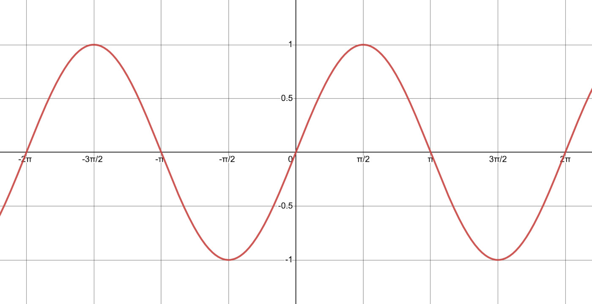

In the previous section we saw how to define a cycle in terms of \(amplitude\), \(period\) and \(\mathit{offset}\):
A little review:
\(Amplitude\): how far the circle moves before going back to the beginning.
\(Period\): how long it takes for one cycle to complete and start again (can be in seconds, but number of frames is more useful when using frameCount).
\(\mathit{Offset}\): starting position of the circle.
Other than the modulus operator and the triangle wave, another easy way of generating cycles is by using the sine and cosine trigonometric functions. This might not be immediately clear from the wikipedia definition: In the context of a right triangle: for a given angle, its sine is the ratio of the length of the side that is opposite that angle to the length of its hypotenuse; and the cosine is the ratio of the length of the adjacent leg to that of the hypotenuse.
But, what’s important to us here is to remember that both the sine and cosine functions repeat every 360º or \(2\pi\) radians.
In the case of sine, as the angle \(\theta\) grows from \(0\) to \(\frac{\pi}{2}\), \(sin(\theta)\) grows from \(0\) to \(1\). As \(\theta\) grows from \(\frac{\pi}{2}\) to \(\pi\), \(sin(\theta)\) decreases from \(1\) to \(0\). As \(\theta\) grows from \(\pi\) to \(\frac{3\pi}{2}\), \(sin(\theta)\) goes from \(0\) to \(-1\), and finally as \(\theta\) grows from \(\frac{3\pi}{2}\) to \(2\pi\), \(sin(\theta)\) increases from \(-1\) to \(0\). After that, as \(\theta\) keeps growing, to \(3\pi\), \(4\pi\), \(5\pi\), etc, the values of \(sin(\theta)\) will keep repeating and always be between \([-1 , 1]\). In other words: $$sin(\theta + 2\pi) = sin(\theta)$$
Visually:

If we look for equations that relate the sine and cosine functions to cyclic or harmonic motion, we might find something like this:
\[y(t) = A \times sin\left(\frac{2\pi}{P}\times t\right)\]where \(A\) is the amplitude and \(P\) is the period.
In p5.js this could be rewritten as:
let x = A * sin(2 * PI / periodFrames * frameCount);
where \(A\) is the amplitude, \(P\) is the period in number of frames and frameCount is the variable that keeps growing indefinitely:
Hmmm…. this kind of works. Since the range of sin() is \([-1, 1]\), our circle is oscillating between \([-amplitude, amplitude]\), which isn’t really what we want. One easy way to fix this is to add 1 to the sin() function so we have a range that goes between \([0, 2]\), then divide that by \(2\) to bring the range down to \([0, 1]\) and, finally, multiply by the amplitude:
Much better. And this same equation works for other parameters, like the circle radius. We just have to define an \(amplitude\), \(period\) and \(\mathit{offset}\) that makes sense for radius values:
We can take some time to play with the parameters here and build some intuition about how they affect the motion of the circle. Try changing xPeriodSec, rPeriodSec, rAmplitude and rOffset.
If we want, we can easily change the variable names and equations to make the circle oscillate vertically:
Here \(amplitude\) is the whole screen height and there’s no \(\mathit{offset}\), so it starts at \(0\).
Now, we can combine harmonic motion in the x and y direction to get elliptic cycles:
We just have to make sure we use \(sin()\) for one direction and \(cos()\) for the other, or else we’ll just get motion in a straight diagonal line.
If we make the x and y functions have different periods, we will get a nice Lissajous movement:
Putting it all together, and using \(sin()\) and \(cos()\) for the x, y and radius parameters ends up giving our sketch a 3D effect: